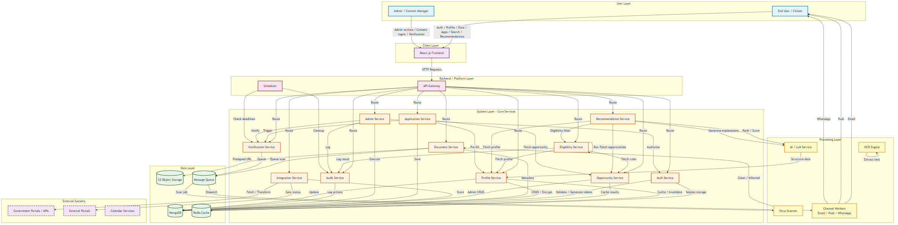

Unified view of all 13 data flows across user, service, data, and external layers

This consolidated flow chart combines all 13 individual data flows into a single system architecture view. It is organized into six logical layers:
All 13 individual flow diagrams feed into this unified architecture. Use the navigation below to explore each flow in detail.